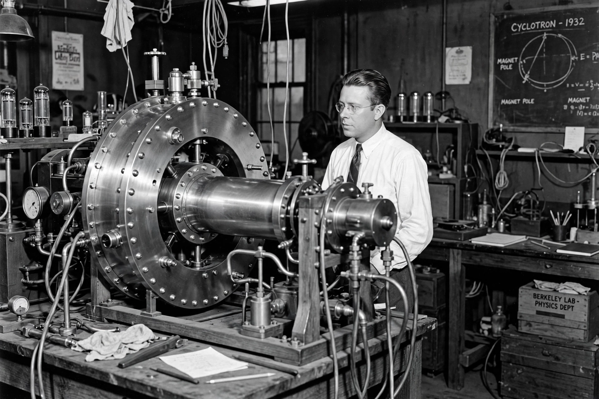

Cyclotron

[Image: Historical photograph of Ernest Lawrence beside an early cyclotron, a squat circular brass chamber]A cyclotron is a type of Particle accelerator invented by Ernest Lawrence in 1929 (with his student M. Stanley Livingston; first operated 1931–32 — Nobel Prize 1939). Charged particles spiral outward in a constant magnetic field while an alternating electric field, synchronised with their constant orbital frequency, accelerates them at each crossing of a gap between two D-shaped electrodes ('dees').
Cyclotrons launched big-machine physics: Berkeley's Radiation Laboratory machines discovered many artificial elements and particles in the 1930s (and produced plutonium for the first time in quantity for study). Relativistic mass increase breaks the synchronism at high energies (a few hundred MeV for protons), ceding the frontier to synchrotrons — but cyclotrons thrive in applied roles: most hospital isotope production (PET tracers), proton therapy centres, and materials irradiation use compact cyclotrons today. Lawrence's patent (1934) and the laboratory model he founded — interdisciplinary teams around big instruments — shaped all of big science.
Resonance condition
The cyclotron frequency f = qB/(2πm) is independent of radius and speed (non-relativistically), so fixed-frequency RF works as the spiral grows — the elegant trick at the design's heart. Sector-focusing and isochronous designs later preserved the trick to higher energies and intensities.